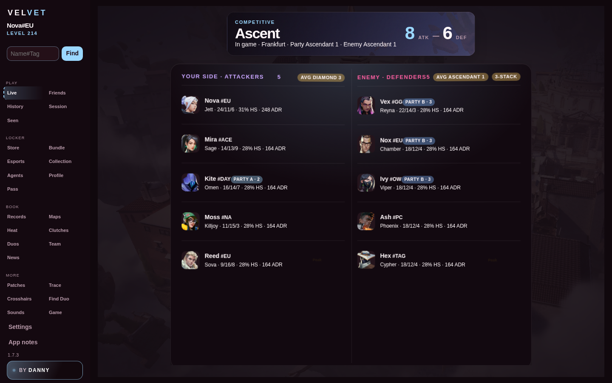
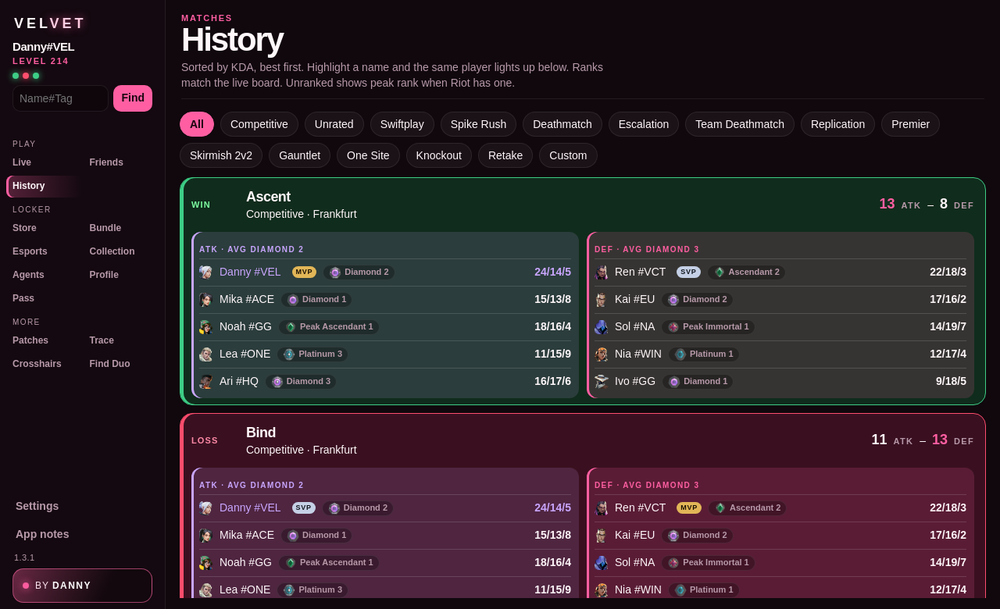
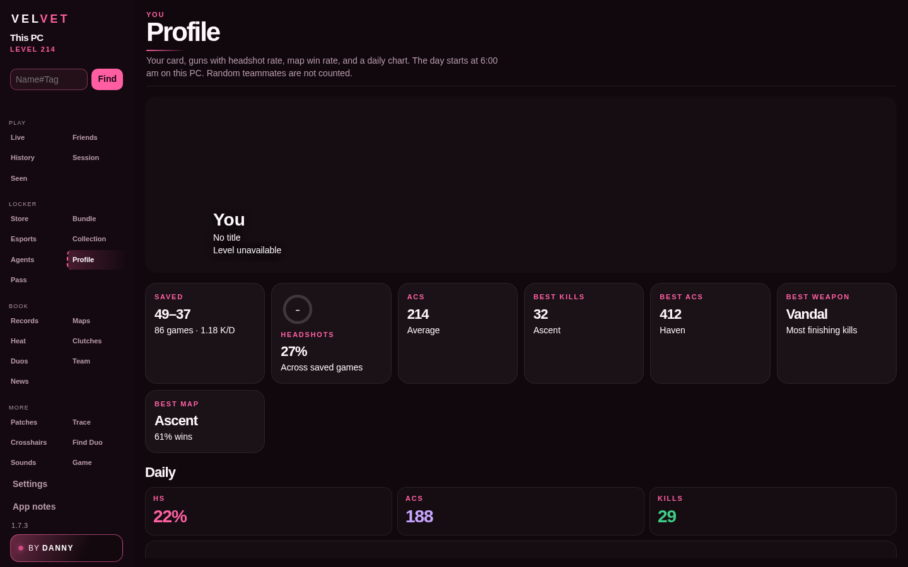
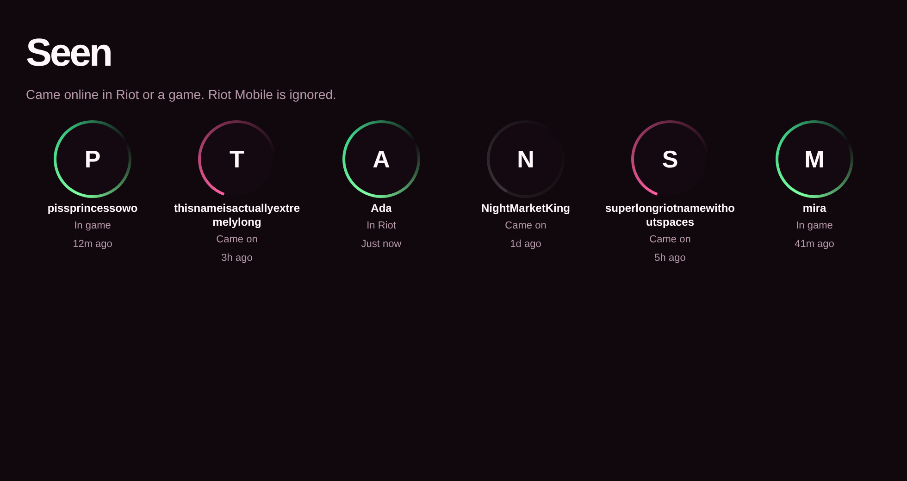

What it is
Velvet is one Windows app. On launch it finds the Riot Client lockfile, reads the local port and the token the client already created, and polls that session for phase, map, mode, score, and the roster. Rank is a separate MMR lookup per player. The binary is not tied to an account. It can only see whoever is signed into the Riot Client on that machine.
Settings, custom audio, and a match archive of up to 100 games are stored in %LOCALAPPDATA%\Velvet. They are not inside the downloaded file.
Live match
Agent select and in-game show both sides: agent, KDA, headshot percent, ADR, rank icon, rank, and RR. Each side header is the average competitive tier on that side. If the current act has no rank and Riot still has a peak, the row is labeled Peak and marked Not active. Peak is not current RR. It still counts in the average. Enemy groups of two or more are marked as a stack.
The phase line includes the server, the party average, the enemy average, and this PC's record on the current map. A daily challenge is computed from recent games.

Match history
Queues are filterable. Inside a finished match, each side is sorted by KDA, highest first. Highlighting a name highlights the same player in the stat table. MVP is the best KDA on the winning side. SVP is the best KDA on the losing side. Opening a player shows that MVP mark on their older games.
History uses the same MMR result as the live board, including the Peak label, the Not active mark, and the side average. A finished match shows each round: whether you won it, how it ended, and which side you were on. A late name stays on the row it was already drawn into. A finished match can be copied as an image.

Profile
The player card, title, level, and agent mastery come from the local account. The stats under the card come from the on-disk archive, not from the last few matches only.
- Friend win rate counts Riot friends only, after two decided games together. Random teammates are excluded.
- A rival is an enemy faced at least twice.
- Each weapon shows finishing kills and headshot percent. Each map shows its win rate.
- A daily chart tracks HS, ACS, and kills. A new day starts at 6:00 am local time on that PC.

Trace, store, locker
An optional overlay is a small always-on-top window with the score and any watch-list names in the current lobby or match. It is not click-through. Live-only mode loads Live and Settings and skips the other pages. A background image can recolor the app from the picture.
Book

Find Duo
Find Duo is in beta. It is a board of posts, not a live queue. You write what you are looking for: roles, modes, server, queue, rank range, and a short note. Age and gender are optional. Filters cover server, queue, mode, age, and gender. Do not post if you are under 16.
After you play with someone, rate them from 1 to 5. The leaderboard is people on the board with a 4 or 5 average, sorted by saved games on their PC. A post stays up for about 12 hours.
Settings can also create a private id. That id is a second channel between two installs: queue, map, score, shared wishes, and watch-list pings. It is not the public board.
Sounds
These are separate controls: alert, a friend appearing in your match, a watched player appearing in your lobby or match, a watched player finishing their own match, wishlist, win, and loss. Win and loss play only after the match result is written, not when a round ends. A round only flashes the window edge. Changing tabs does not play a sound.
Quiet hours mute the alerts. They do not mute the post-match win or loss. Any control can use a local file. Preview plays that file immediately. A new install with no saved volume starts at 15%.
Install
Download VelvetSetup.exe and run it. It copies Velvet into %LOCALAPPDATA%\Velvet, adds Start menu and Desktop shortcuts, lists Velvet in Windows apps, opens the app, and closes. Uninstall from Apps closes Velvet if it is still open, removes the program, and asks before deleting saved games and settings. If you keep them, they stay in that folder.
After that, a newer build is a pink bar inside the app. That replaces Velvet.exe. It is not the installer again. Agents, the battle pass, patches, and the esports list open from a copy saved on the PC and refresh when the source changes.
Bug reports and feedback go from Settings. Twitter.
Windows SmartScreen can warn the first time. The build is unsigned. The file to trust is the release on this repository. Velvet is not made by Riot Games.